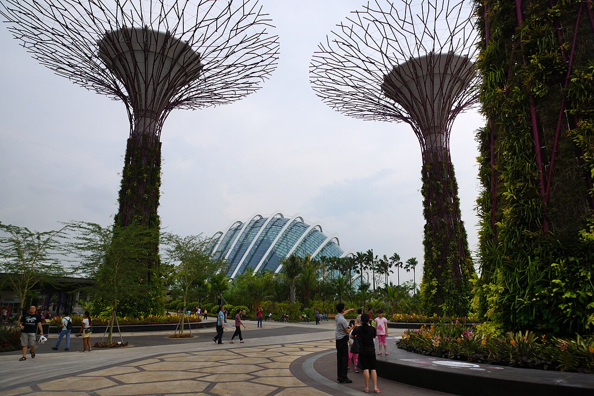

Gardens by the Bay makes room for a different kind of city day. You can move from the cool air of a conservatory to a path edged with plants, then turn back toward the skyline as the light begins to change.
First, take the weather indoors
Start with the conservatories if you want a break from Singapore’s heat and humidity. The official visitor planner lists the attractions and current planning information. Some attractions require tickets, so compare the official ticket portal with your preferred route before arriving.
There is no need to race through every display. Choose one conservatory to explore closely, notice how the air and sound change, and leave enough time to sit for a moment before heading back outside.
Take the long way outside
When you step back into the open gardens, let the paths decide the next turn. The official getting-here guide has directions and parking details, and the garden map can help you connect the areas you most want to see.
Take water and sun protection, and keep a little flexibility for a rest or a change of route. A garden visit feels better when the schedule leaves room for looking, rather than only for reaching the next attraction.
Let the evening be the final stop
As the light fades, make your way toward the Supertree Grove. The structures are striking from a distance, but the perspective changes when you stand among them and look up. Check the official hours and closures page for current details before you plan an evening visit.
For photographs, keep the main paths open and give others a clear view. Then put the phone away for a minute: the garden and skyline make a different picture when you experience them together.

Official visitor information
Check attraction availability and current opening information before setting out.
Recommended apps for the best trip
These independent services are not Met partners. Confirm routes, ticket terms, and current availability with each provider.
Google Maps
Check walking directions and connections to the garden entrances.
Grab
Compare ride options in Singapore when a car makes sense for your route.
Citymapper
Compare public-transport routes across Singapore before and after your visit.
Klook
Compare activity and ticket listings, then verify current access on the Gardens’ official site.
Met
save your name and the memory in the “Gardens by the Bay” Guest Book with a handwritten-style note or photo, and connect with other great travelers along the path.